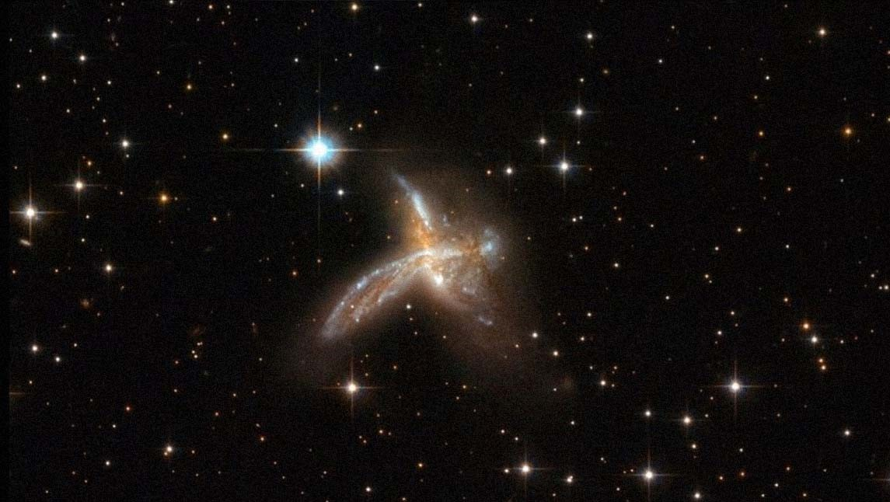

"El mensaje, anunciado a bombo y platillo por todo el cielo en el momento del nacimiento, no tiene por objeto recalcar el destino, el resultado de un pasado bueno o malo, sino despertar el deseo humano de escapar de la esclavitud universal. Él puede deshacer lo que hizo. Sólo él fue el instigador de las causas cuyos efectos son ahora dominantes en su vida. Puede superar cualquier limitación porque fue él quien la creó en primer lugar, como consecuencia de sus propios actos, y porque tiene recursos espirituales que no están sujetos a la presión planetaria.
El temor supersticioso a la Astrología convierte a las personas en autómatas, dependiendo servilmente de una dirección mecánica. El hombre sabio vence a sus planetas; es decir, a su pasado, transfiriendo su lealtad de la creación al Creador.
Cuanto más consciente sea de su unidad con el Espíritu, menos será dominado por la materia. El alma es siempre libre; es inmortal, porque no tiene nacimiento. No puede ser regida por las estrellas. Las semillas del karma pasado no pueden germinar si se tuestan en el fuego de la sabiduría divina"
Capítulo Dieciséis de La Autobiografía de un Yogi de Yogananda
Veamos este mensaje con ojos astrológicos.
"El mensaje, anunciado a bombo y platillo por todo el cielo en el momento del nacimiento, no tiene por objeto recalcar el destino, el resultado de un pasado bueno o malo, sino despertar el deseo humano de escapar de la esclavitud universal". Esto quiere decir: Toda la Carta es el resultado del Alma/Plutón. Habla aquí de saltar hacia Acuario/Urano; poder ser libres verdaderamente.
"Él puede deshacer lo que hizo". Es decir, podemos cambiar nuestro destino. Sólo nosotros mismos, no hay nadie que lo pueda hacer por nosotros. Esto habla de una profunda introyección de Saturno, una realidad despojada de "pensamientos ilusorios".
"Sólo él fue el instigador de las causas cuyos efectos son ahora dominantes en su vida". Habla aquí de que hay una Ley de Causa y Efecto, la cual está representada, justamente, por Capricornio/Saturno. Es la Gran Ley en la que TODOS estamos inmersos. Esto también implica HACERSE CARGO de lo propio: dejar de echar culpas y asumir la RESPONSABILIDAD de nuestra propia vida (Saturno/Capricornio). ¿Dónde podemos ver las causas, a grandes rasgos? En el punto donde se encuentra Plutón + el Nodo Sur + La Luna (leído acordemente de acuerdo con el signo en el que se encuentran y sus regentes).
"Puede superar cualquier limitación porque fue él quien la creó en primer lugar, como consecuencia de sus propios actos..." Aquí habla de saltar el portal que cuida Capricornio/Saturno. Asumiendo esta realidad es que podemos superar cualquier limitación. El otro NO ME HACE NADA y por lo tanto el otro NO TIENE NINGÚN PODER SOBRE MÍ. Sólo yo puedo encerrarme o liberarme a mí mismo. Llegar a Acuario/Urano
"... y porque tiene recursos espirituales que no están sujetos a la presión planetaria". Esto es más que interesante. ¡Tenemos recursos que pueden trascender nuestra propia Carta! "El temor supersticioso a la Astrología convierte a las personas en autómatas, dependiendo servilmente de una dirección mecánica". Aquí refuerza todo lo que estuvimos viendo más arriba. Los planetas no me influencian, más bien, me muestran quien soy
"El hombre sabio vence a sus planetas, es decir, a su pasado, transfiriendo su lealtad de la creación al Creador". Nuevamente dice que "nuestros planetas" solo son "nuestro pasado" (y no una influencia maligna o benigna a la que estamos sometidos). Queda claro también que sólo la lealtad al creador es lo que nos permite vencer a nuestros propios planetas; es decir, a nosotros mismos, a nuestras propias causas. Es lo que nos une a ese recurso espiritual del que hablaba más arriba. Entramos ya en Piscis/Neptuno (siempre con un gran Saturno introyectado). No por nada primero viene Capricornio, luego Acuario, luego Piscis. Para llegar estos últimos hay que estar bien anclado en Capricornio. "Cuanto más consciente sea de su unidad con el Espíritu, menos será dominado por la materia. El alma es siempre libre; es inmortal, porque no tiene nacimiento. No puede ser regida por las estrellas". Nuevamente nos lleva a la conciencia original, a Piscis/Neptuno. Salir del pensamiento ilusorio de que solo somos un cuerpo, que sólo existe la materia, y que la muerte es el fin.
"Las semillas del karma pasado no pueden germinar si se tuestan en el fuego de la sabiduría divina". Podríamos volver a decir que toda la Carta es nuestro Karma. Plutón es nuestro Karma condensado (porque cuenta allí todo lo que NOSOTROS hemos hecho y deshecho en todas y cada una de nuestras encarnaciones) y, por tanto, toda la carta que se desprende de él, también lo es. Son el resultado de nuestras acciones pasadas. Solo con "sabiduría divina", dice, podemos detenerla. ¿Dónde encontramos la "sabiduría divina"? ¿Dónde conectamos con la "lealtad al creador"? Pues en las enseñanzas que nos dejaron los seres que llegaron hasta ese lugar “Todo es posible para el que cree”. Marcos 9:23.